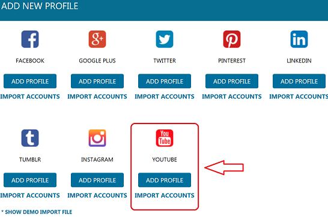
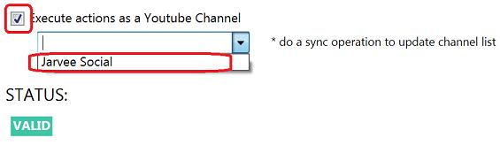

Good news everyone, with this latest update (v1.4.8.2) we’ve also added Youtube as a platform in JARVEE. You will now be able to automate your Youtube accounts as well. The newly added platform comes with: Follow, Unfollow, Like, Comment, Full Browser Experience and Watch Video Tools. So you’ll have quite a large array of options at your disposal. This brings the total number of available platforms in JARVEE to 8 and it’s something we’re really proud of.
Let’s go really quick through how to add a Youtube account to JARVEE and what each of the tools does.
First of all, you’ll need to go to Social Profiles, click on “ADD PROFILE” and add a Youtube profile.

After you’ve created your first profile, this acts like any other type of account in Jarvee, so you’ll have to add the username and password for this account. Once you do this and validate it, you’ll be able to use all the tools to grow and improve the visibility of this account.
One important difference here, unlike any other types of accounts in JARVEE, since Youtube has channels you will be able to execute all actions as a channel. This will allow you to boost only the channels you want to. In order to do this, after you successfully verify your account and you’re still on the Social Profiles page for that account enable the option “execute actions as a youtube channel” and pick the channel you want from the dropdown list.

Once you picked a channel here all the actions you do with all the tools will be done as that channel alone. Since you can’t specify the channel for each tool but only when you add a Youtube account you will only be able to do this for one channel alone. If you want to automate more than 1 channel from the same account you’ll have to add another youtube account, use the same username and password and after it’s valid pick another channel from the same place.
Now let’s take a look at the tools available for the Youtube platform
Follow
The idea here as with any other platform is to follow other people so they notice you and follow you back. If you do this as coming from a certain channel that channel will get more exposure and more subscribers.

If you’ve used any other platform in JARVEE you’ll already be familiar with this tool and how it operates. You will notice it’s split into 4 sections: Settings, Follow Sources, Extracted Users, Results. In the Settings tab you enter the general settings that will tell the tool how and when to work, from the Sources tab you’ll tell it where to take the people it follows from. In Extracted users you’ll be able to see a list of the people it extracted and are waiting to receive a follow and finally in Results you’ll see all the follows JARVEE did for you.
If you want to go more in depth about what each option does, here’s the knowledge base article on the follow tool for all the platforms available in JARVEE
Unfollow
Using this tool you’ll be able to unfollow the people that you’ve previously followed but did not follow you back. It’s a common tactic when growing your social media accounts.

This Tool only has one tab with all the settings required to use it. For more in-depth explanations please check our knowledge base article on the unfollow tool for the JARVEE supported platforms.
Like
This is another largely used tactic when growing your youtube channel or any other social media account. You like other people’s images, posts, tweets or in this case videos so you attract their attention to your account. If they come and like what they see they will like or even follow back. In order for this to work nicely you’ll have to use good sources that are highly targeted and in your niche.

As you can see in the above screenshot there are 3 sub-tabs for this tool : Settings, Sources and Results. In settings you’ll choose the main settings that govern all actions made by this tool, in Sources you’ll have to pick the actual sources that will be used for the like actions and in Results you’ll be able to see the actual videos that JARVEE liked for you.
For more detailes on the Like tool please check our knowledge base article on the like tool, it’s pretty much the same for all social media platforms JARVEE supports.
Comment
Using this tool you’ll be able to leave comments on other videos. This, like all the other actions you can do on Youtube will leave signs on your passing and people will be coming back to check your channel/account out. Make sure you don’t use this to spam or post repetitive and bad messages at it can get you in trouble. You will either need to comment very little or use spinned syntax comments that will produce unique and high quality comments.

Like almost all the other tools this one also has: Settings, Sources and Results. They do the same thing as for the others, so you should be familiar with them by now. For more exact information about each setting here’s the knowledge base article on the comment tool.
I want to make a special note here, do not abuse this tool, it’s easy to set it up to make hundreds of comments in a matter of hours, all spam and bad looking. It will get you in trouble. Make sure to post high quality and unique comments instead, and it will help your channel grow a lot faster.
Full browser experience
This is a special kind of tool, unlike all the others it won’t help you draw attention to your account, but rather make your account look more human like. What it does is it visits random websites that you can specify and get the google pixel tracking ad. This way the browser used by JARVEE to automate the actions on your account will look more natural as normal people visit other sites as well with their browsers. Those sites leave traces that can be seen. This tool simulates exactly this.

At this time there’s no full knowledge base article on the workings of this tool but I will write that up and also update the article when it’s ready. In the meantime, as you can see it’s not exactly hard to use. You specify the run timers, the settings, the websites that will be visited and start the tool and let it do its job.
Watch video
This tool will watch videos for you. You can either use it to increase the number of views on your own videos or on other people’s videos so your account appears more human like. After all what normal person only does action for his account but never watches any other video on youtube.

As you can see in the above screenshot this tool is split into 3 sub-tabs: Settings, Sources, Results. They are and do the same things as for all the other tools, in the Settings tab you set how often this tool will execute and how long to watch the video for. In the Sources tab you specify what videos to actually view and in the Results tab you’ll see the results of the videos JARVEE watched for you.
Since this is a new kind of tool available for Youtube alone there’s no knowledge base article for it either, however all the settings are pretty straightforward so you should not have any problems with it.
Should you have any questions about any of the Youtube tools though, feel free to comment below and we can discuss everything in further detail.
This is it for now, you have pretty much everything you need to start growing your Youtube accounts/channels as well. Take it easy and don’t over-do it from day one and you’ll soon have nicely growing channels on auto-pilot!
Grand says
This is grand!
Derek K Borthwick says
Could you please explain what the purpose of the ignore is and how to undo something that you have ignored.
What are tokens and what are the cookie settings for.
Bruce says
Do you refer to Ignore tab in Social profiles section? If that’s the case: All unfollowed users are sent there, so you don’t follow them again.
Regarding cookies, they are there so your account looks more natural and stays logged in. With full browser experience features, you’re profile, by using embedded browser, visits other sites too, just like normal user would do. Cookies from other sites are inserted in your embedded browser, this way youtube relevant ads to your profile. It’s made so your account mimics human behavior.
Tokens are used on sites that have search field, so you don’t keep visiting same pages over and over again.
Ezra says
I must admit, the ads saying “Jarvee is the most complete social media automation tool of today” are actually true… With Youtube integration, you only miss Quora and Reddit. You should seriously think about adding them.
Adam says
Thank you 🙂 And yes, we’ll see what we can do!
Nicolas Di Lucia says
It would be incredible if you managed to pull off a soundcloud section as well!
Bernard says
So a few questions actually, I thought I would ask here as more people might see it. Before I go ahead, I love Jarvee. Definitely an amazing tool!
1. Liking function – to my knowledge, it is impossible to see who liked your youtube videos. Unless you specifically go to the person’s channel (you must know who) and go to their liked history where it would be shown. Therefore looks like this function is not very useful. It’s not displaying a notification unlike instagram or facebook would. Please correct me if I’m wrong.
2. Youtube views. The standard setting is 40s to 120s, I believe youtube’s algorithm determines the quality of content by whether the user watches a full video or not. I imagine this time frame counts as a view but it probably damages the video reputation. Therefore, would you suggest to watch it from the beginning to the end?
3. What is the safe number to aim for when it comes to youtube views? Hundreds and thousands will probably result in a ban on youtube right?
4. Browser experience, do we have to use it in order to avoid getting in trouble with youtube? Or should we not worry about it?
Thanks!
Adam says
Thank you for the appreciation, here are the answers to your questions:
1. Liking feature helps your account look more natural, but it is also used by blackhat marketers to like their own videos and increase like count since they usually run a lot of accounts.
2. Those are default settings. The tool is set to 40 – 120 seconds, but that doesn’t mean it will start watching video from 40 seconds. It starts from beginning of the video and plays it for at least 40 seconds and maximum 120. Of course, you can change these valuse per you needs to watch it all if you want, these are just the default values.
3. There shouldn’t be any issues with watching videos, Youtube wants you to spend as much time as possible on their website.
4. It’s probably better to use Full browser experience, this will make your accounts look natural. Youtube will be able to show relevant ads to your accounts based on websites you’ve visited which is a good thing.
TheZ says
Incredible ! I love this tool really helps people to concentrate on their work/passion without thinking all time about how they will share it
I would just like to know, is there a way to extract other channels followers as it is on Facebook, Instagram, .. ??
And if not, what would you recommend me to do instead to hit a lot of people without going always to their channel to copy the link ?
Again, already thank you for all, Jarvee is amazing guys.
Adam says
Thank you for your nice words, glad our work is appreciated 🙂
As for your question, youtube doesn’t show that info so there’s no way to do it unfortunately..
ello says
Nice addition to jarvee but i think you will need a really expensive vps to automate more than 10 youtube accounts . Please optimize youtube automation as single account eats approx 200 mb ram and 10% cpu while doing actions . When the action is completed it continues to occupy space all the time . i have 5 gb ram vps when added 50 accounts it occupied 95% of memory and still same since 1 day .i had to close accounts to save memory . Add a option to limit concurrent action as the option already available dosen’t seems to work.
Adam says
The concurrent connections options definitely works, as for the youtube part, it takes as much as it’s needed, all is done in an embeded browser, it would take the same amount of ram and cpu if you did it manually inside chrome since Jarvee itself doesn’t need many resources.
Sten says
Awesome update, but is there an option that you can automatically upload videos? Or like Instagram repost from another account, but instead “reupload” videos from another channel?
Adam says
Unfortunately posting is not supported yet, we’ll see what we can do in the future
Nate says
Hi ! Great job done by you guys.
For the youtube views will i need a VPN to continuously change my IP address? or Jarvee will do it? obviously with the same IP i will be banned by YT.
What do you recommend?
Thanks.
Adam says
you can use different proxies, a vpn won’t help here.
Volkan says
Why Vpn does not help?
Also, are1 different proxies enough for not to be banned?
Adni says
Jarvee does not support VPN, you can’t add it. Also, we didn’t really make YT automation to increase views, you would need 1000’s of accounts and proxies to accomplish this.
Anu Sharma says
How can I schedule video on my youtube channels?
Adni says
We didn’t add that feature and we probably won’t be adding it since it would take a lot of resources…
Neville Aitchesin says
Love it! However, having issues getting the watch feature to work for Youtube. Start button turns green then goes back to yellow without an error message.
Adam says
Glad to hear that, as for your problem – check that you have valid sources set up 🙂
Michael says
Nice1! Quora and Reddit left, you go guys!
Does youtube go along with rotating residential IP address providers like Smartproxy or Luminati? I am using those for pretty much all other services, but can not be sure at these times.
Will surely dig into that, great, great news!
Esma says
In my result tab I have many views that have been made but they are not visible on the video “the number of views does not move”.
I refreshed the YouTube page and try to connect to different posts to see the results but nothing works!
Am I the only one with this problem? Is there a delay before seeing the results on the video?
Adni says
I’m not sure what exactly are you trying to accomplish? Do you use multiple accounts to watch one video and trying to increase views?
Best way to sort this out would be to contact support and explain in details what you need and what you are currently doing so we can provide you better help.
Regards
Diana Voroneca says
I must say its amazing, the only downside that it’s not on MAC…
Ricky says
Is using the watch video feature ok or ideal for videos that are monetized? Or will Youtube detect some type of community guildline infractions
Bruce says
That’s not the purpose of watch videos tool, it’s made to make your account look more natural. Anyway, in order for youtube to “register” the view and get 100’s or 1000’s views, you would need that many accounts and proxies too.
bread says
Ok how about using this tool to manage just to watch videos with 100 accounts? But with out log in or youtube account, I will be using different proxies? is this possible with jarvee? Cause I want to buy this product.
Danile says
What about how to manage the list of subscribers?
Bruce says
I’m not sure what exactly would you like to do with it… Send us email as “Feature request”, describe in details what would you like to be implemented and we’ll see is there anything that can be done 🙂
Phillip says
Could you say have 70 jarvee youtube accounts (with 70 different accounts with proxies) watching all videos one by one randomly from a select group of 3-5 channels ?
Bruce says
Yes, it can be done, use Watch video tool and add channel list to Sources tab. Set the tool in Settings and start it.
Aymane says
What should i do if i want 100k views , only proxies not enough or i need both 100k accounts and 100k proxies !!??
Bruce says
You need accounts too that you’ll use to run Watch videos and add your video there.
Aymane says
the software can handle 100k accounts
Bruce says
Unfortunately, no. it can’t handle that many accounts on 1 PC. You would have to get multiple licenses and multiple VPSs to install Jarvee on them. It would cost you a lot.
Aymane says
what the maximum accounts can i add on the software !!?
Bruce says
It depends on plan you choose. Our lowest plan is for 10 social accounts, it costs $29.95/month
We also have plans for 30, 70, 100, 150, 200 and 250 accounts. To get quotes, please contact support.
alaa mohamed says
OK when i adding youtube account i facing this message
This browser or app may not be secure. Learn more
Try using a different browser. If you’re already using a supported browser, you can refresh your screen and try again to sign in.
so what can i do
Bruce says
We’re aware of this issue, but it’s simple to fix it:
1. Delete account from Jarvee
2. Add it again (don’t verify yet)
3. Click on it, so you get to Account SETTINGS page.
4. Check option “Show advanced Profile Settings” at the bottom of the tab.
5. Check box “Use mobile UserAgent for login…”
6. Click on “Verify” button and wait till account gets valid status.
Enjoy.
siva says
Error executing Login Operation for ‘Digicupid youtube’: code 45 – No next button found for password!. Will try again in one minute. –
Adam says
Please contact support with this